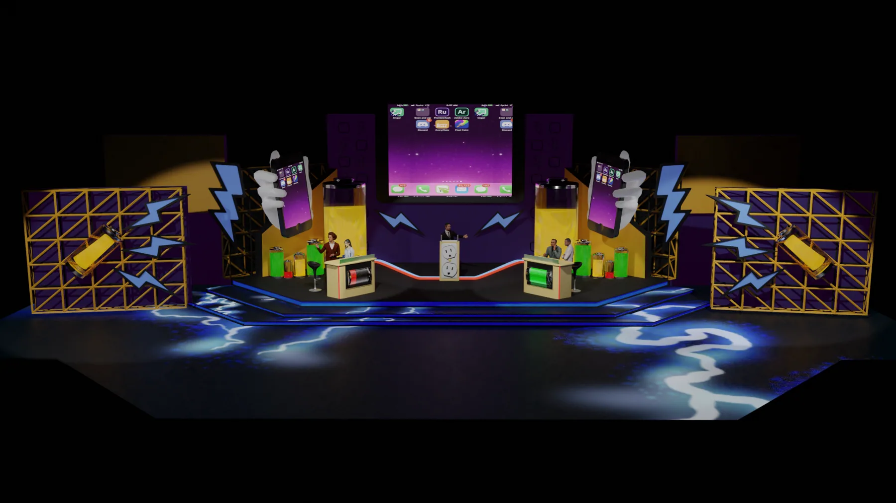
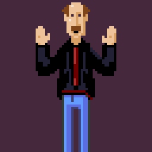
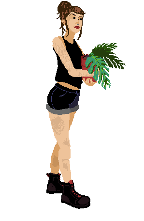

Chapter VII · 3D / Interaction / Prototyping
Motion, Prototypes & Sets
Things I made to learn a tool, and one I made for a pitch.
- Prototyping
- Animation
- 3D

Go Take a Hike — a Figma prototype
It was only my second Figma project. Figma saw it and asked to talk with me about where I thought their animation tools could improve.
CHARGED — a stage for a live game show
A commission to imagine the stage for a live game show, for a pitch meeting.
Progress renders along the way.
Characters

